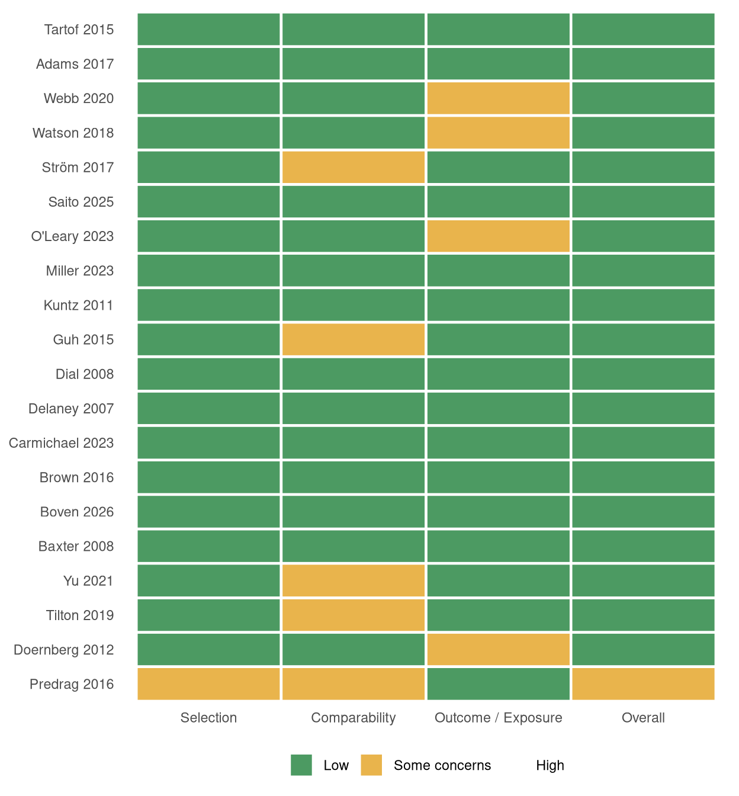
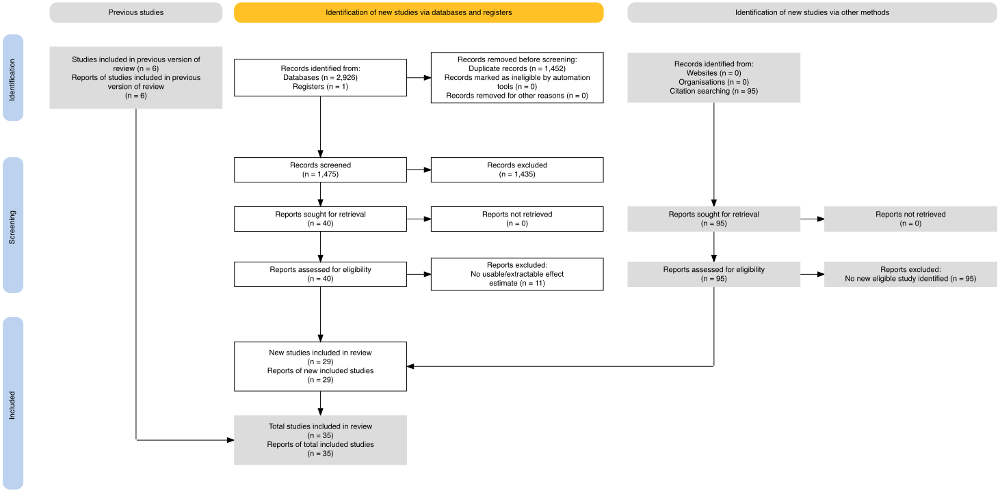
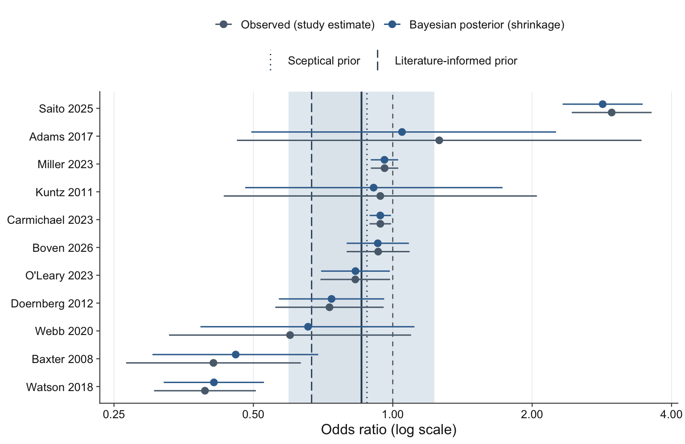
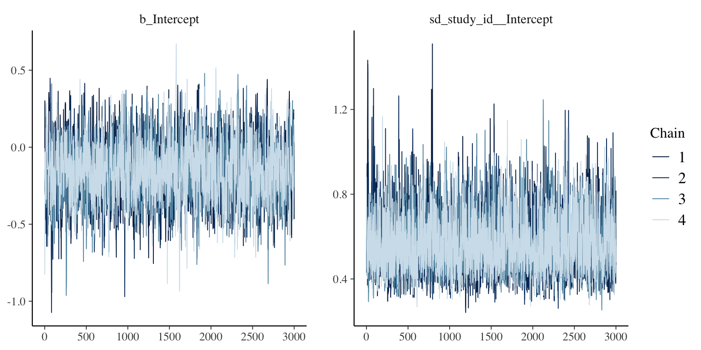
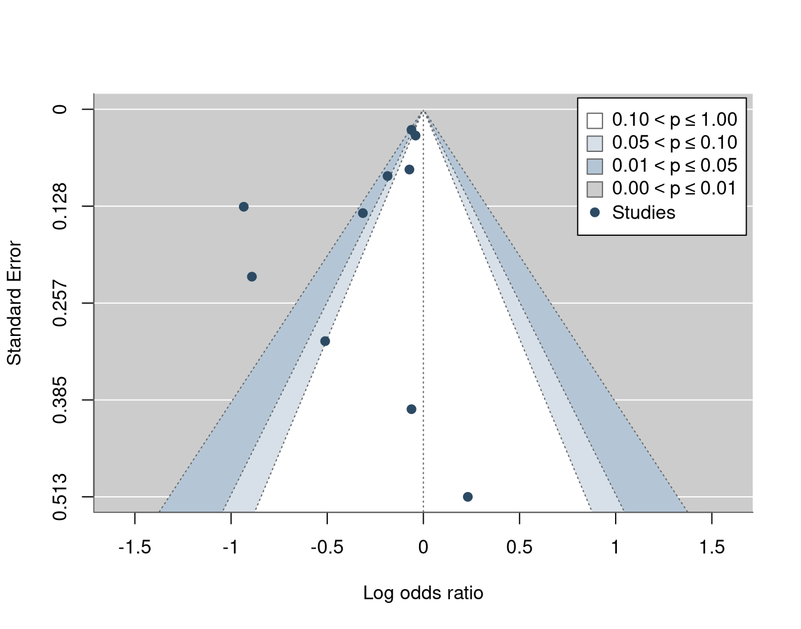
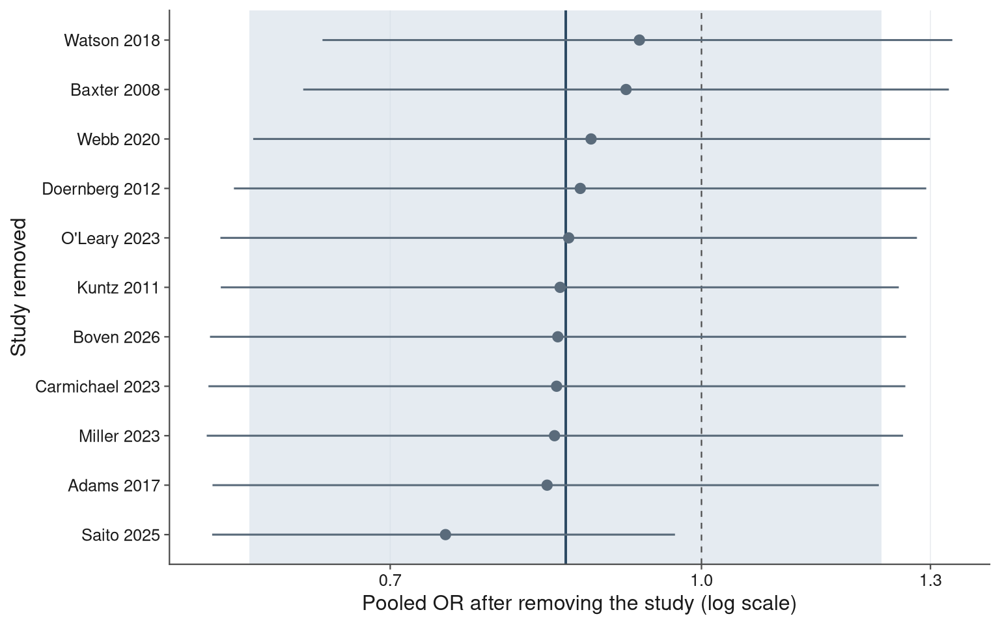
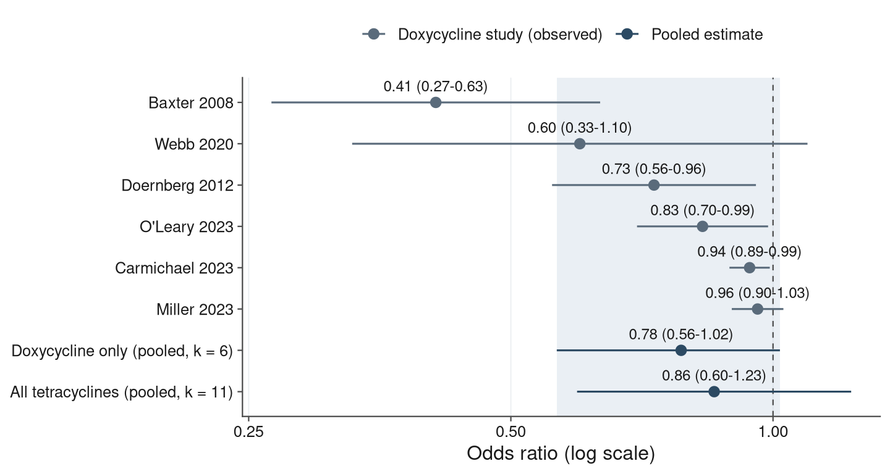
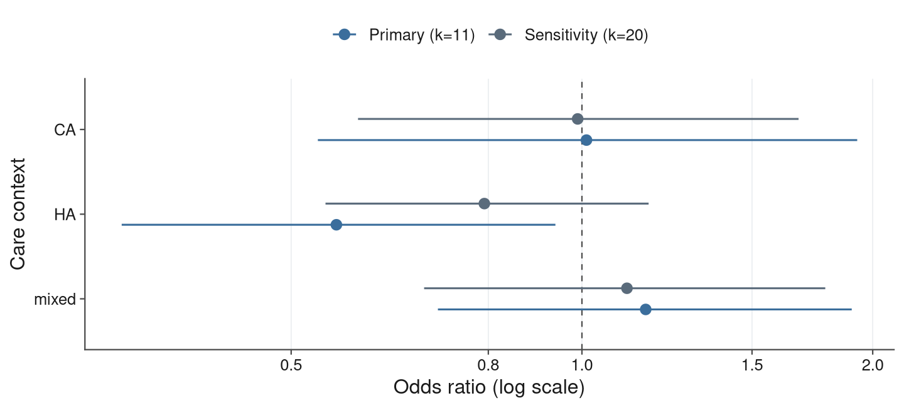
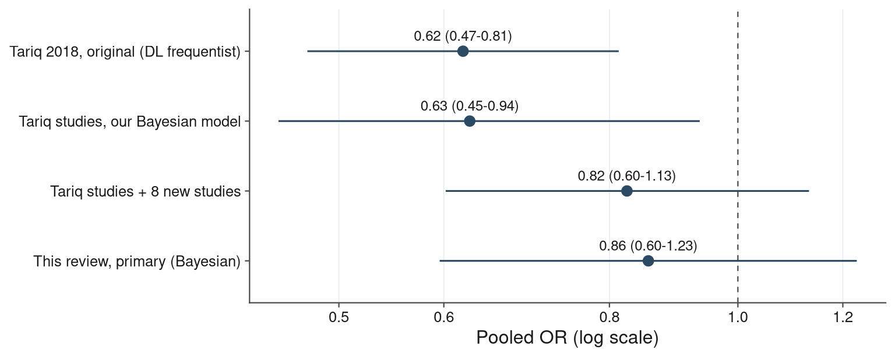

Tetracyclines and the risk of Clostridioides difficile infection
Updated systematic review & Bayesian random-effects meta-analysis
Research questionDomanda di ricerca
Among patients exposed to systemic antibiotics, is exposure to a tetracycline-class antibiotic associated with a different risk of incident C. difficile infection (CDI) compared with other antibiotics? This report re-estimates the association within a Bayesian random-effects framework and quantifies the posterior probability of a protective effect. Studies whose only comparator was “no antibiotic” are analysed separately as a secondary comparison, per the PROSPERO protocol’s PECO.
Nei pazienti esposti ad antibiotici sistemici, l’esposizione a un antibiotico della classe delle tetracicline è associata a un rischio diverso di infezione incidente da C. difficile (ICD) rispetto ad altri antibiotici? Questo report ristima l’associazione con un modello bayesiano a effetti casuali e quantifica la probabilità a posteriori di un effetto protettivo. Gli studi il cui unico comparatore era “nessun antibiotico” sono analizzati separatamente come confronto secondario, secondo il PECO del protocollo PROSPERO.
Study selection (PRISMA 2020)Selezione degli studi (PRISMA 2020)

PRISMA 2020 flow. Canonical PRISMA 2020 diagram (generated with the PRISMA2020 R package). Identification and de-duplication counts are validated (2,926 database + 1 register records + 95 from citation searching of Tariq 2018; 1,452 duplicates removed). Screening-stage counts are provisional, reconstructed from the Elicit AI second-screen pending human dual screening per the protocol (PRISMA_flow_data.xlsx): databases/registers arm 1,475 screened → 40 assessed → 11 full-text exclusions; the 95 other-methods (citation) reports yielded no additional eligible study. Of the 35 included studies (29 new + 6 carried forward from Tariq 2018), 20 contribute a curated effect size to the Bayesian meta-analysis: 11 in the primary comparison (tetracyclines vs other antibiotics) and 9 in the secondary comparison (tetracyclines vs no antibiotic).
Flusso PRISMA 2020. Diagramma PRISMA 2020 canonico (generato con il pacchetto R PRISMA2020). I conteggi di identificazione e deduplicazione sono validati (2.926 record da database + 1 registro + 95 da citation searching di Tariq 2018; 1.452 duplicati rimossi). I conteggi della fase di screening sono provvisori, ricostruiti dal secondo screening AI di Elicit in attesa del doppio screening manuale secondo il protocollo (PRISMA_flow_data.xlsx): braccio database/registri 1.475 sottoposti a screening → 40 valutati → 11 esclusioni full-text; i 95 report da altri metodi (citation searching) non hanno prodotto ulteriori studi eleggibili. Dei 35 studi inclusi (29 nuovi + 6 trasferiti da Tariq 2018), 20 contribuiscono con una stima curata alla meta-analisi bayesiana: 11 nel confronto primario (tetracicline vs altri antibiotici) e 9 nel confronto secondario (tetracicline vs nessun antibiotico).
Table 1. Characteristics of included studiesTabella 1. Caratteristiche degli studi inclusi
| Study | Design | Setting | N | Agent | Comparator | Adj. | OR (95% CI) |
|---|---|---|---|---|---|---|---|
| (Watson et al. 2018) | retrospective cohort | HA | 1,237,537 | tetracycline class | reference category | Yes | 0.39 (0.31-0.51) |
| (Baxter et al. 2008) | matched case control | HA | 4,493 | doxycycline | reference category | Yes | 0.41 (0.27-0.63) |
| (Ström et al. 2017) | matched case control | mixed | 584 | tetracycline | no antibiotic | No | 0.60 (0.14-2.55) |
| (Webb et al. 2020) | retrospective cohort | HA | 506,068 | doxycycline | reference category | Yes | 0.60 (0.33-1.10) |
| (Doernberg et al. 2012) | retrospective cohort | mixed | 2,734 | doxycycline | specific comparator | Yes | 0.73 (0.56-0.96) |
| (Tilton and Johnson 2019) | matched case control | HA | 200 | doxycycline | no antibiotic | No | 0.76 (0.27-2.13) |
| (O’Leary et al. 2023) | retrospective cohort | HA | 156,107 | doxycycline | specific comparator | Yes | 0.83 (0.70-0.99) |
| (Tartof et al. 2015) | retrospective cohort | HA | 401,234 | tetracycline class | no antibiotic | No | 0.84 (0.63-1.10) |
| (Delaney et al. 2007) | matched case control | CA | 13,563 | tetracycline class | no antibiotic | Yes | 0.90 (0.52-1.56) |
| (Boven et al. 2026) | matched case control | mixed | 398,080 | tetracycline class | reference category | Yes | 0.93 (0.80-1.09) |
| (Carmichael et al. 2023) | retrospective cohort | mixed | 50,861,011 | doxycycline | reference category | Yes | 0.94 (0.89-0.99) |
| (Kuntz et al. 2011) | nested case control | CA | 3,344 | tetracycline class | reference category | Yes | 0.94 (0.43-2.05) |
| (Miller et al. 2023) | matched case control | CA | 956,424 | doxycycline | reference category | Yes | 0.96 (0.90-1.03) |
| (Guh et al. 2017) | matched case control | CA | 452 | tetracycline | no antibiotic | No | 1.00 (0.23-4.35) |
| (Dial et al. 2008) | matched case control | CA | NR | tetracycline class | no antibiotic | Yes | 1.10 (0.12-10.20) |
| (Adams et al. 2017) | matched case control | CA | 5,324 | tetracycline class | reference category | Yes | 1.26 (0.46-3.45) |
| (Brown et al. 2016) | nested case control | HA | 169,453 | tetracycline | no antibiotic | Yes | 1.26 (0.86-1.85) |
| (Stojanović 2016) | matched case control | HA | 111 | tetracycline class | no antibiotic | No | 1.35 (0.22-8.47) |
| (Yu et al. 2021) | matched case control | HA | 1,443 | tetracycline | no antibiotic | No | 2.90 (1.33-6.33) |
| (Saito et al. 2025) | nested case control | mixed | 24,585 | tetracycline class | reference category | Yes | 2.97 (2.44-3.62) |
Table 1. Characteristics of the 20 studies contributing to the Bayesian synthesis (11 vs other antibiotics; 9 vs no antibiotic; ordered by odds ratio). N = analytic sample size (NR = not reported); Adj. = adjusted estimate. The OR is the single curated effect size carried into the meta-analysis; each study is identified by its bibliographic citation.
Tabella 1. Caratteristiche dei 20 studi nella sintesi bayesiana (11 vs altri antibiotici; 9 vs nessun antibiotico; ordinati per odds ratio). N = dimensione campionaria analitica (NR = non riportata); Adj. = stima aggiustata. L’OR è la singola stima d’effetto curata usata nella meta-analisi; ogni studio è identificato dalla relativa citazione bibliografica.
Risk of bias (Newcastle-Ottawa Scale)Rischio di bias (scala Newcastle-Ottawa)
All 20 studies contributing to the synthesis are observational, so risk of bias was assessed with the Newcastle-Ottawa Scale (NOS) (Wells et al. 2011), using the design-appropriate version (cohort or case-control; maximum 9 stars across the Selection, Comparability and Outcome/Exposure domains). Uniform decision rules were applied: the case-definition item was credited only for laboratory-confirmed or independently validated definitions (unvalidated ICD/claims algorithms were not); comparability stars required matching or adjustment for age/sex (first star) and for additional key confounders (second star), so studies whose curated estimate is unadjusted beyond matching received one comparability star; for cohorts, completeness of follow-up was credited only for closed healthcare systems (HMO, claims or population registers). Overall ratings: 7-9 stars = low risk of bias, 5-6 = some concerns, 4 or fewer = high. Per-item scores and study-level justifications are recorded in nos_assessment.csv.
Tutti i 20 studi che contribuiscono alla sintesi sono osservazionali; il rischio di bias è stato valutato con la scala Newcastle-Ottawa (NOS) (Wells et al. 2011), nella versione appropriata al disegno (coorte o caso-controllo; massimo 9 stelle nei domini Selezione, Comparabilità ed Esito/Esposizione). Sono state applicate regole decisionali uniformi: la definizione di caso è stata accreditata solo se confermata in laboratorio o basata su codici validati (gli algoritmi ICD/claims non validati non ricevono la stella); le stelle di comparabilità richiedono appaiamento o aggiustamento per età/sesso (prima stella) e per ulteriori confondenti chiave (seconda stella), per cui gli studi la cui stima curata non è aggiustata oltre l’appaiamento ricevono una sola stella; per le coorti, la completezza del follow-up è stata accreditata solo per sistemi sanitari chiusi (HMO, claims o registri di popolazione). Valutazioni complessive: 7-9 stelle = rischio di bias basso, 5-6 = alcune perplessità, 4 o meno = alto. I punteggi per singolo item e le giustificazioni per studio sono registrati in nos_assessment.csv.
| Study | Design | Set | Selection (0-4) | Comparability (0-2) | Outcome/Exposure (0-3) | Total (0-9) | Overall RoB |
|---|---|---|---|---|---|---|---|
| (Adams et al. 2017) | case-control | primary | 4 | 2 | 3 | 9 | Low |
| (Tartof et al. 2015) | cohort | secondary | 4 | 2 | 3 | 9 | Low |
| (Baxter et al. 2008) | case-control | primary | 3 | 2 | 3 | 8 | Low |
| (Boven et al. 2026) | case-control | primary | 3 | 2 | 3 | 8 | Low |
| (Brown et al. 2016) | case-control | secondary | 3 | 2 | 3 | 8 | Low |
| (Carmichael et al. 2023) | cohort | primary | 3 | 2 | 3 | 8 | Low |
| (Delaney et al. 2007) | case-control | secondary | 3 | 2 | 3 | 8 | Low |
| (Dial et al. 2008) | case-control | secondary | 3 | 2 | 3 | 8 | Low |
| (Guh et al. 2017) | case-control | secondary | 4 | 1 | 3 | 8 | Low |
| (Kuntz et al. 2011) | case-control | primary | 3 | 2 | 3 | 8 | Low |
| (Miller et al. 2023) | case-control | primary | 3 | 2 | 3 | 8 | Low |
| (O’Leary et al. 2023) | cohort | primary | 4 | 2 | 2 | 8 | Low |
| (Saito et al. 2025) | case-control | primary | 3 | 2 | 3 | 8 | Low |
| (Ström et al. 2017) | case-control | secondary | 4 | 1 | 3 | 8 | Low |
| (Watson et al. 2018) | cohort | primary | 4 | 2 | 2 | 8 | Low |
| (Webb et al. 2020) | cohort | primary | 4 | 2 | 2 | 8 | Low |
| (Doernberg et al. 2012) | cohort | primary | 3 | 2 | 2 | 7 | Low |
| (Tilton and Johnson 2019) | case-control | secondary | 3 | 1 | 3 | 7 | Low |
| (Yu et al. 2021) | case-control | secondary | 3 | 1 | 3 | 7 | Low |
| (Stojanović 2016) | case-control | secondary | 2 | 1 | 3 | 6 | Some concerns |
Table 2. Newcastle-Ottawa assessment of the 20 studies in the synthesis (domain subtotals; maxima 4/2/3 stars, 9 overall). Selection covers case/cohort definition, representativeness, comparison-group selection and absence of the outcome at baseline (definition of controls for case-control studies); Outcome/Exposure covers ascertainment of outcome (cohorts) or exposure (case-control studies), comparability of ascertainment across groups, and follow-up/non-response.
Tabella 2. Valutazione Newcastle-Ottawa dei 20 studi della sintesi (subtotali per dominio; massimi 4/2/3 stelle, 9 complessive). La selezione copre definizione di caso/coorte, rappresentatività, selezione del gruppo di confronto e assenza dell’esito al baseline (definizione dei controlli per i caso-controllo); Esito/Esposizione copre l’accertamento dell’esito (coorti) o dell’esposizione (caso-controllo), la comparabilità dell’accertamento tra i gruppi e il follow-up/non-risposta.
Traffic-light plot. Domain-level risk-of-bias ratings. Domain rules: Selection low if at least 3 of 4 stars; Comparability low with 2 stars, some concerns with 1; Outcome/Exposure low with 3 stars, some concerns with 2. Overall: 7-9 low, 5-6 some concerns, 4 or fewer high.
Traffic-light plot. Valutazioni di rischio di bias per dominio. Regole: Selezione bassa con almeno 3 stelle su 4; Comparabilità bassa con 2 stelle, alcune perplessità con 1; Esito/Esposizione bassa con 3 stelle, alcune perplessità con 2. Complessivo: 7-9 basso, 5-6 alcune perplessità, 4 o meno alto.
19 of 20 studies reach 7 or more stars (low risk of bias). Recurring limitations are case definitions based on unvalidated diagnostic codes (selection), hospital-based controls in smaller case-control studies (selection), reliance on unadjusted per-drug estimates (comparability), and uncertain completeness of post-discharge outcome capture in hospital-discharge cohorts (outcome). For the six studies carried forward from Tariq et al. (2018), our independent scores (median 8, range 7-9) are consistent with theirs (median 7, range 7-8) (Tariq and Khanna 2018).
The pre-specified sensitivity analysis excluding studies at higher risk of bias (NOS below 7) removes only Predrag 2016: the primary estimate is unchanged because all 11 antibiotic-comparator studies are low risk (OR 0.86 (0.60–1.23)), and the secondary, no-antibiotic comparison becomes OR 1.05 (0.74–1.54) (k = 8). Conclusions are therefore robust to study quality as assessed here.
19 studi su 20 raggiungono almeno 7 stelle (basso rischio di bias). Le limitazioni ricorrenti sono definizioni di caso basate su codici diagnostici non validati (selezione), controlli ospedalieri negli studi caso-controllo più piccoli (selezione), affidamento a stime per singolo farmaco non aggiustate (comparabilità) e incerta completezza della cattura dell’esito dopo la dimissione nelle coorti ospedaliere (esito). Per i sei studi trasferiti da Tariq et al. (2018), i nostri punteggi indipendenti (mediana 8, intervallo 7-9) sono coerenti con i loro (mediana 7, intervallo 7-8) (Tariq and Khanna 2018).
L’analisi di sensibilità pre-specificata che esclude gli studi a maggior rischio di bias (NOS inferiore a 7) rimuove solo Predrag 2016: la stima primaria è invariata perché tutti gli 11 studi con comparatore antibiotico sono a basso rischio (OR 0.86 (0.60–1.23)), e il confronto secondario (vs nessun antibiotico) diventa OR 1.05 (0.74–1.54) (k = 8). Le conclusioni sono quindi robuste rispetto alla qualità degli studi così come valutata qui.
Warning
Provisional assessment. The protocol requires independent, duplicate full-text assessment by two reviewers. The scores above are a single-reviewer assessment based on the extraction database — whose covariate matrix is still unpopulated and whose estimate rows are all marked unverified — and should be re-confirmed against the full articles before being considered final.
Valutazione provvisoria. Il protocollo richiede una valutazione indipendente, in doppio, sul full-text da parte di due revisori. I punteggi sopra riportati derivano da una valutazione di un singolo revisore basata sul database di estrazione — la cui matrice delle covariate non è ancora popolata e le cui righe di stima risultano tutte non verificate — e devono essere riconfermati sugli articoli integrali prima di essere considerati definitivi.
MethodsMetodi
Hierarchical random-effects model on the log-odds scale: \[y_i \sim \text{Normal}(\theta_i, s_i^2), \qquad \theta_i \sim \text{Normal}(\mu, \tau^2).\] Primary prior \(\mu \sim \text{Normal}(0, 1^2)\); heterogeneity prior \(\tau \sim \text{Half-Normal}(0, 0.5)\). Posteriors were computed exactly by numerical integration (bayesmeta) and independently confirmed by Hamiltonian Monte Carlo (brms/Stan, 4 chains). We report the pooled odds ratio (OR = exp \(\mu\)) with a 95% credible interval (CrI), the between-study SD \(\tau\), the predictive interval for a new study, and the posterior probabilities P(OR<1) and P(OR<0.80). A pre-specified prior-sensitivity analysis used vague, sceptical and literature-informed priors.
Modello gerarchico a effetti casuali su scala log-odds: \[y_i \sim \text{Normale}(\theta_i, s_i^2), \qquad \theta_i \sim \text{Normale}(\mu, \tau^2).\] Prior primario \(\mu \sim \text{Normale}(0, 1^2)\); prior sull’eterogeneità \(\tau \sim \text{Half-Normale}(0, 0.5)\). Le distribuzioni a posteriori sono state calcolate in modo esatto per integrazione numerica (bayesmeta) e confermate in modo indipendente con Hamiltonian Monte Carlo (brms/Stan, 4 catene). Riportiamo l’odds ratio aggregato (OR = exp \(\mu\)) con intervallo di credibilità (ICr) al 95%, la deviazione standard tra studi \(\tau\), l’intervallo predittivo per un nuovo studio e le probabilità a posteriori P(OR<1) e P(OR<0,80). Un’analisi di sensibilità sui prior pre-specificata ha usato prior vago, scettico e informato dalla letteratura.
Primary result (11 studies)Risultato primario (11 studi)
Pooled odds ratio (tetracyclines vs other antibiotics) 0.86 (0.60–1.23)
The 95% credible interval crosses 1. The posterior probability of any protective effect is P(OR<1) = 0.81, and the probability of a clinically meaningful effect is P(OR<0.80) = 0.35. Between-study heterogeneity is substantial (\(\tau\) = 0.55 (0.34–0.83); I² = 98% (95% CrI 96–99%)): the predictive interval for a future study spans OR 0.25–2.88.
Odds ratio aggregato (tetracicline vs altri antibiotici) 0.86 (0.60–1.23)
L’intervallo di credibilità al 95% attraversa 1. La probabilità a posteriori di un qualsiasi effetto protettivo è P(OR<1) = 0.81, e la probabilità di un effetto clinicamente rilevante è P(OR<0,80) = 0.35. L’eterogeneità tra studi è sostanziale (\(\tau\) = 0.55 (0.34–0.83); I² = 98% (95% CrI 96–99%)): l’intervallo predittivo per uno studio futuro va da OR 0.25–2.88.

Figure 1. Study-level odds ratios (primary set, 11 studies with antibiotic comparators). Gray = observed estimates; blue = Bayesian posterior (shrinkage) estimates, pulled toward the pooled mean. The navy line and blue band show the pooled OR (primary prior) and 95% credible interval. The dotted and long-dashed vertical lines mark the pooled OR under the sceptical and literature-informed priors; the faint outer band is the prior-sensitivity range.
Figura 1. Odds ratio per studio (set primario, 11 studi con comparatori antibiotici). Grigio = stime osservate; blu = stime a posteriori bayesiane (shrinkage), attratte verso la media aggregata. La linea navy e la banda blu indicano l’OR aggregato (prior primario) e l’ICr al 95%. Le linee verticali punteggiata e tratteggiata indicano l’OR aggregato con i prior scettico e informato dalla letteratura; la banda esterna tenue è l’intervallo di sensibilità ai prior.
Prior sensitivitySensibilità ai prior
The estimate is stable across data-dominated priors (primary, vague, sceptical) but shifts toward protection under the literature-informed prior centred on the earlier Tariq (2018) estimate of OR 0.62 — i.e. that conclusion is driven by prior belief, not the new data.
La stima è stabile tra i prior dominati dai dati (primario, vago, scettico) ma si sposta verso la protezione con il prior informato dalla letteratura, centrato sulla stima precedente di Tariq (2018), OR 0,62 — cioè quella conclusione è guidata dalla convinzione a priori, non dai nuovi dati.
| Prior on μ | OR (95% CrI) | P(OR<1) | P(OR<0.80) |
|---|---|---|---|
| Primary — N(0, 1²) | 0.86 (0.60–1.23) | 0.81 | 0.35 |
| Vague — N(0, 10²) | 0.85 (0.59–1.23) | 0.82 | 0.36 |
| Sceptical — N(0, 0.35²) | 0.88 (0.64–1.21) | 0.79 | 0.27 |
| Literature — N(log 0.62, 0.10²) | 0.67 (0.56–0.80) | 1.00 | 0.98 |
| Prior su μ | OR (ICr 95%) | P(OR<1) | P(OR<0,80) |
|---|---|---|---|
| Primario — N(0, 1²) | 0.86 (0.60–1.23) | 0.81 | 0.35 |
| Vago — N(0, 10²) | 0.85 (0.59–1.23) | 0.82 | 0.36 |
| Scettico — N(0, 0,35²) | 0.88 (0.64–1.21) | 0.79 | 0.27 |
| Letteratura — N(log 0,62, 0,10²) | 0.67 (0.56–0.80) | 1.00 | 0.98 |
Prior-data conflictConflitto prior-dati
Because the literature-informed prior is the only assumption under which the result becomes confidently protective, we formally check whether it conflicts with the updated data. Using the Box / Marshall-Spiegelhalter measure, we compare the prior for μ — N(log 0.62, 0.10²), i.e. OR 0.62 — against the data-only estimate (vague-prior posterior: OR 0.85, log-scale mean -0.16, SD 0.19). The conflict statistic is z = -1.50 (two-sided p = 0.13), indicating mild tension but no formal conflict. The literature prior is more optimistic than the updated evidence, but the gap is within sampling variation. Its influence on the pooled estimate comes mainly from being far narrower (SD 0.10) than the data-only posterior (SD 0.19) rather than from statistical incompatibility with the data.
Poiché il prior informato dalla letteratura è l’unica assunzione sotto cui il risultato diventa decisamente protettivo, verifichiamo formalmente se sia in conflitto con i dati aggiornati. Con la misura di Box / Marshall-Spiegelhalter confrontiamo il prior per μ — N(log 0,62, 0,10²), cioè OR 0,62 — con la stima basata sui soli dati (posteriori con prior vago: OR 0.85, media log -0.16, SD 0.19). La statistica di conflitto è z = -1.50 (p bilaterale = 0.13), indicando una lieve tensione ma nessun conflitto formale. Il prior della letteratura è più ottimistico delle evidenze aggiornate, ma la differenza rientra nella variabilità campionaria. La sua influenza deriva soprattutto dall’essere molto più stretto (SD 0,10) della posteriori basata sui dati (SD 0.19), non da un’incompatibilità statistica con i dati.
MCMC confirmation & convergenceConferma MCMC e convergenza
The two engines agree to within Monte Carlo error, confirming the exact posterior. All diagnostics indicate good convergence.
I due motori concordano entro l’errore Monte Carlo, confermando la posteriori esatta. Tutti gli indici indicano una buona convergenza.
| Method | OR (95% CrI) | τ | P(OR<1) | P(OR<0.80) |
|---|---|---|---|---|
| bayesmeta (exact) | 0.86 (0.60–1.23) | 0.55 | 0.81 | 0.35 |
| brms (MCMC) | 0.85 (0.60–1.23) | 0.55 | 0.81 | 0.36 |
| Parameter | R-hat | Bulk ESS | Tail ESS |
|---|---|---|---|
| μ (log-OR) | 1.000 | 2516 | 3702 |
| τ (heterogeneity SD) | 1.000 | 3217 | 5375 |
| Metodo | OR (ICr 95%) | τ | P(OR<1) | P(OR<0,80) |
|---|---|---|---|---|
| bayesmeta (exact) | 0.86 (0.60–1.23) | 0.55 | 0.81 | 0.35 |
| brms (MCMC) | 0.85 (0.60–1.23) | 0.55 | 0.81 | 0.36 |
| Parametro | R-hat | ESS bulk | ESS tail |
|---|---|---|---|
| μ (log-OR) | 1.000 | 2516 | 3702 |
| τ (SD eterogeneità) | 1.000 | 3217 | 5375 |

Figure 2. MCMC trace plots for the four chains (pooled log-OR and heterogeneity SD).
Figura 2. Trace plot MCMC per le quattro catene (log-OR aggregato e SD dell’eterogeneità).
Small-study effectsEffetti dei piccoli studi
With k = 11 studies (meeting the pre-specified ≥10 threshold), a contour-enhanced funnel plot and Egger’s regression test assess funnel asymmetry. There is no evidence of asymmetry (Egger z = -0.28, p = 0.78); the studies scatter fairly symmetrically about the pooled effect. Given the observational evidence base and modest k, this is reassuring but not decisive.
Con k = 11 studi (soglia pre-specificata ≥10), un funnel plot contour-enhanced e il test di regressione di Egger valutano l’asimmetria. Non vi è evidenza di asimmetria (Egger z = -0.28, p = 0.78); gli studi si distribuiscono in modo abbastanza simmetrico attorno all’effetto aggregato. Data la natura osservazionale e il k contenuto, è rassicurante ma non decisivo.

Figure 3. Contour-enhanced funnel plot; shaded bands mark the p = 0.10 / 0.05 / 0.01 regions.
Figura 3. Funnel plot contour-enhanced; le bande indicano le regioni p = 0,10 / 0,05 / 0,01.
Leave-one-outAnalisi leave-one-out
No single study drives the pooled estimate: removing any one study leaves the pooled OR between 0.75 and 0.93, always below 1. The most influential study is Saito 2025 (a harmful outlier); dropping it moves the OR most toward protection, while dropping the protective Watson 2018 moves it toward the null. The qualitative conclusion is stable throughout.
Nessun singolo studio determina la stima aggregata: rimuovendo un qualsiasi studio l’OR aggregato resta tra 0.75 e 0.93, sempre inferiore a 1. Lo studio più influente è Saito 2025 (un outlier sfavorevole): la sua rimozione sposta l’OR verso la protezione, mentre rimuovere il protettivo Watson 2018 lo sposta verso l’assenza di effetto. La conclusione qualitativa resta stabile.

Figure 4. Leave-one-out pooled OR; the blue line and band are the full k = 11 estimate and 95% CrI.
Figura 4. OR aggregato leave-one-out; la linea e la banda blu sono la stima completa k = 11 e l’ICr al 95%.
Doxycycline-only sensitivity analysisAnalisi di sensibilità: sola doxiciclina
Doxycycline is the dominant tetracycline in the evidence base and the agent most often invoked for anaerobe-sparing activity, so we pre-specified a sensitivity analysis restricting the primary antibiotic-comparator set to doxycycline-exposure studies (k = 6), keeping the primary prior. The pooled odds ratio is 0.78 (0.56–1.02) with P(OR<1) = 0.97 and P(OR<0.80) = 0.56. Restricting to a single agent roughly halves the between-study heterogeneity (τ = 0.27 vs 0.55 in the full primary set) and tightens the predictive interval for a new study to OR 0.36–1.59. The doxycycline estimate is more precise and more consistently below 1 than the all-tetracycline estimate, but its 95% credible interval still touches 1 — a stronger, yet still not definitive, protective signal.
La doxiciclina è la tetraciclina prevalente nella base di evidenze e l’agente più spesso citato per l’attività di risparmio degli anaerobi; abbiamo quindi pre-specificato un’analisi di sensibilità che limita il set primario con comparatore antibiotico agli studi con esposizione a doxiciclina (k = 6), mantenendo il prior primario. L’odds ratio aggregato è 0.78 (0.56–1.02) con P(OR<1) = 0.97 e P(OR<0,80) = 0.56. Limitarsi a un singolo agente dimezza circa l’eterogeneità tra studi (τ = 0.27 vs 0.55 nel set primario completo) e restringe l’intervallo predittivo per un nuovo studio a OR 0.36–1.59. La stima per la doxiciclina è più precisa e più costantemente inferiore a 1 rispetto alla stima su tutte le tetracicline, ma il suo intervallo di credibilità al 95% tocca ancora 1 — un segnale protettivo più forte, ma non ancora definitivo.
| Analysis | Studies (k) | OR (95% CrI) | τ | P(OR<1) | P(OR<0.80) |
|---|---|---|---|---|---|
| All tetracyclines (primary) | 11 | 0.86 (0.60–1.23) | 0.55 | 0.81 | 0.35 |
| Doxycycline only | 6 | 0.78 (0.56–1.02) | 0.27 | 0.97 | 0.56 |
| Analisi | Studi (k) | OR (ICr 95%) | τ | P(OR<1) | P(OR<0,80) |
|---|---|---|---|---|---|
| Tutte le tetracicline (primario) | 11 | 0.86 (0.60–1.23) | 0.55 | 0.81 | 0.35 |
| Solo doxiciclina | 6 | 0.78 (0.56–1.02) | 0.27 | 0.97 | 0.56 |
Table 2. Doxycycline-only sensitivity analysis versus the full primary set. Restricting to doxycycline exposure lowers heterogeneity and sharpens the protective signal, though the credible interval still includes OR = 1.
Tabella 2. Analisi di sensibilità sulla sola doxiciclina rispetto al set primario completo. Limitarsi all’esposizione a doxiciclina riduce l’eterogeneità e rende più netto il segnale protettivo, benché l’intervallo di credibilità includa ancora OR = 1.

Figure 5. Forest plot of the doxycycline-only sensitivity analysis. Gray points are the six doxycycline-exposure studies (observed ORs, 95% CIs); navy points are the pooled Bayesian estimates for the doxycycline-only subset (k = 6) and the full primary set (k = 11). The shaded band is the doxycycline-only 95% credible interval; the dashed line marks OR = 1.
Figura 5. Forest plot dell’analisi di sensibilità sulla sola doxiciclina. I punti grigi sono i sei studi con esposizione a doxiciclina (OR osservati, IC 95%); i punti navy sono le stime bayesiane aggregate per il sottoinsieme doxiciclina (k = 6) e per il set primario completo (k = 11). La banda ombreggiata è l’intervallo di credibilità al 95% della sola doxiciclina; la linea tratteggiata indica OR = 1.
Additional sensitivity analysesAnalisi di sensibilità aggiuntive
Adjusted-only secondary comparison. Restricting the no-antibiotic comparison to the three studies with multivariable-adjusted estimates (Delaney 2007, Dial 2008, Brown 2016) gives OR 1.10 (0.62–1.88) (k = 3), P(OR<1) = 0.34 — consistent with the full secondary set, with a wider interval reflecting the smaller evidence base.
Excluding ratio-metric conversions. The curated estimates of Doernberg 2012 (adjusted HR), Dial 2008 (adjusted RR) and Brown 2016 (adjusted IRR) enter the analysis as ORs under a rare-outcome approximation. Excluding them leaves the primary estimate essentially unchanged (k = 10; OR 0.87 (0.59–1.29), P(OR<1) = 0.77) and the secondary estimate likewise (k = 7; OR 1.01 (0.67–1.60), P(OR<1) = 0.49). Conclusions are robust to this approximation.
Confronto secondario con sole stime aggiustate. Limitando il confronto contro nessun antibiotico ai tre studi con stime aggiustate multivariabili (Delaney 2007, Dial 2008, Brown 2016) si ottiene OR 1.10 (0.62–1.88) (k = 3), P(OR<1) = 0.34 — coerente con l’intero set secondario, con un intervallo più ampio che riflette la base di evidenze ridotta.
Esclusione delle conversioni da misure di tasso/rischio. Le stime curate di Doernberg 2012 (HR aggiustato), Dial 2008 (RR aggiustato) e Brown 2016 (IRR aggiustato) entrano nell’analisi come OR tramite un’approssimazione per esiti rari. Escludendole, la stima primaria resta sostanzialmente invariata (k = 10; OR 0.87 (0.59–1.29), P(OR<1) = 0.77), così come quella secondaria (k = 7; OR 1.01 (0.67–1.60), P(OR<1) = 0.49). Le conclusioni sono robuste rispetto a questa approssimazione.
Secondary comparison: vs no antibiotic (9 studies)Confronto secondario: vs nessun antibiotico (9 studi)
Against a no-antibiotic comparator the association is essentially null (OR 1.06 (0.75–1.53), P(OR<1) = 0.36). This is expected — almost any antibiotic raises CDI risk relative to no antibiotic — and it explains why pooling these studies into the primary set attenuated the protective signal. The two comparator questions are distinct and should not be combined.
Rispetto a un comparatore senza antibiotico l’associazione è sostanzialmente nulla (OR 1.06 (0.75–1.53), P(OR<1) = 0.36). È un risultato atteso — quasi ogni antibiotico aumenta il rischio di ICD rispetto a nessun antibiotico — e spiega perché aggregare questi studi nel set primario attenuava il segnale protettivo. Le due domande sul comparatore sono distinte e non vanno combinate.
SubgroupsSottogruppi
Within the primary set, the doxycycline-restricted subgroup and cohort studies lean protective, whereas case-control studies do not — a design-related divergence that warrants cautious interpretation.
All’interno del set primario, il sottogruppo limitato alla doxiciclina e gli studi di coorte tendono alla protezione, mentre gli studi caso-controllo no: una divergenza legata al disegno da interpretare con cautela.
| Analysis | Studies (k) | OR (95% CrI) | P(OR<1) |
|---|---|---|---|
| Doxycycline only | 6 | 0.78 (0.56–1.02) | 0.97 |
| Case-control designs | 6 | 1.05 (0.60–1.82) | 0.42 |
| Cohort designs | 5 | 0.69 (0.46–1.03) | 0.97 |
| Analisi | Studi (k) | OR (ICr 95%) | P(OR<1) |
|---|---|---|---|
| Solo doxiciclina | 6 | 0.78 (0.56–1.02) | 0.97 |
| Disegni caso-controllo | 6 | 1.05 (0.60–1.82) | 0.42 |
| Disegni di coorte | 5 | 0.69 (0.46–1.03) | 0.97 |
Care-context meta-regressionMeta-regressione per contesto assistenziale
A pre-specified Bayesian meta-regression (exact, bmr) on the primary antibiotic-comparator set (k = 11) estimates a separate pooled OR per care context (CA 3, HA 4, mixed 4). The protective association is concentrated in hospital-acquired (inpatient) settings (OR 0.56 (0.33–0.94), P(OR<1) = 0.98), while community-acquired and mixed settings straddle 1. This mirrors Tariq (2018), whose setting subgroup found protection in inpatients (OR 0.55) but not mixed populations (OR 0.92). As a sensitivity analysis on the full primary set (k = 20; CA 6, HA 9, mixed 5), the hospital-acquired estimate attenuates to OR 0.79 (0.54–1.17) (P(OR<1) = 0.88), because that set adds no-antibiotic-comparator studies that dilute the setting contrast. Per-group counts are small, so this is exploratory; residual heterogeneity remains (τ = 0.47).
Una meta-regressione bayesiana pre-specificata (esatta, bmr) sul set primario con comparatore antibiotico (k = 11) stima un OR aggregato per ciascun contesto (CA 3, HA 4, misto 4). L’associazione protettiva si concentra nei contesti ospedalieri (pazienti ricoverati) (OR 0.56 (0.33–0.94), P(OR<1) = 0.98), mentre i contesti comunitari e misti attraversano 1. Ciò rispecchia Tariq (2018), la cui analisi per contesto trovava protezione nei ricoverati (OR 0,55) ma non nelle popolazioni miste (OR 0,92). Come analisi di sensibilità sul set primario completo (k = 20; CA 6, HA 9, misto 5), la stima ospedaliera si attenua a OR 0.79 (0.54–1.17) (P(OR<1) = 0.88), perché quel set aggiunge studi con comparatore “nessun antibiotico” che diluiscono il contrasto. Le numerosità per gruppo sono piccole, quindi è esplorativo; l’eterogeneità residua permane (τ = 0.47).

Figure 6. Care-context pooled ORs from the Bayesian meta-regression: primary antibiotic-comparator set (k = 11, blue) with full-set sensitivity (k = 20, gray).
Figura 6. OR aggregati per contesto dalla meta-regressione bayesiana: set primario con comparatore antibiotico (k = 11, blu) e sensibilità sul set completo (k = 20, grigio).
Comparison with Tariq (2018)Confronto con Tariq (2018)
Can our Bayesian approach reproduce Tariq? Yes. Applied to Tariq’s exact six studies, a DerSimonian-Laird model reproduces their result exactly (0.62 (0.47–0.81), I² = 53%), and our Bayesian model gives a near-identical point estimate (0.63 (0.45–0.94), P(OR<1) = 0.98). The Bayesian credible interval is wider than Tariq’s confidence interval because it propagates the uncertainty in τ that is unavoidable with only six studies — the divergence is one of honest uncertainty, not of the point estimate.
Why does the updated review not find clear protection? Chiefly the additional studies. Adding the eight newer antibiotic-comparator studies to Tariq’s six moves the pooled OR from ~0.63 to 0.82 (0.60–1.13) (P(OR<1) = 0.89) and roughly doubles heterogeneity — and this bridge lands essentially on our primary estimate. The new evidence is dominated by very large administrative cohorts (e.g. Carmichael, Miller, Watson, Webb, Boven) whose estimates sit close to the null and carry substantial weight. Secondary contributors to the difference are (i) the method (Bayesian vs DL), which mainly widens intervals rather than shifting the centre; and (ii) comparator and estimate decisions — our protocol separates “vs other antibiotics” from “vs no antibiotic”, so three of Tariq’s six studies (Delaney, Dial, Tartof) move to the secondary set, and Tartof’s estimate differs (Tariq’s adjusted OR 0.50 vs our unadjusted 0.84).
Il nostro approccio bayesiano riproduce Tariq? Sì. Applicato ai sei studi esatti di Tariq, un modello DerSimonian-Laird ne riproduce esattamente il risultato (0.62 (0.47–0.81), I² = 53%), e il nostro modello bayesiano fornisce una stima puntuale quasi identica (0.63 (0.45–0.94), P(OR<1) = 0.98). L’intervallo di credibilità bayesiano è più ampio dell’intervallo di confidenza di Tariq perché propaga l’incertezza su τ, inevitabile con soli sei studi: la differenza riguarda l’incertezza, non la stima puntuale.
Perché la revisione aggiornata non trova una protezione netta? Soprattutto per gli studi aggiuntivi. Aggiungendo gli otto nuovi studi con comparatore antibiotico ai sei di Tariq, l’OR aggregato passa da ~0,63 a 0.82 (0.60–1.13) (P(OR<1) = 0.89) e l’eterogeneità circa raddoppia — e questo “ponte” coincide sostanzialmente con la nostra stima primaria. Le nuove evidenze sono dominate da coorti amministrative molto grandi (es. Carmichael, Miller, Watson, Webb, Boven), con stime vicine al valore nullo e peso sostanziale. Contribuiscono in via secondaria (i) il metodo (bayesiano vs DL), che allarga gli intervalli più che spostare il centro; e (ii) le decisioni su comparatore e stime — il protocollo separa “vs altri antibiotici” da “vs nessun antibiotico”, per cui tre dei sei studi di Tariq (Delaney, Dial, Tartof) passano al set secondario, e la stima di Tartof differisce (OR aggiustato 0,50 di Tariq vs 0,84 non aggiustato nostro).

Figure 7. From Tariq to the updated review: recapitulation and stepwise decomposition of the difference.
Figura 7. Da Tariq alla revisione aggiornata: recupero e decomposizione passo-passo della differenza.
Certainty of evidence (GRADE)Certezza delle evidenze (GRADE)
Certainty was rated following the GRADE approach (Guyatt et al. 2008). Because all evidence is observational, both comparisons start at low certainty; each was rated down for serious inconsistency and serious imprecision, yielding very low certainty for both questions.
| Outcome: incident CDI | k | Pooled OR (95% CrI) | Illustrative absolute effect* | Risk of bias | Inconsistency | Indirectness | Imprecision | Publication bias | Certainty |
|---|---|---|---|---|---|---|---|---|---|
| Tetracyclines vs other antibiotics | 11 | 0.86 (0.60–1.23) | 17 vs 20 per 1,000 (12–24) | Not seriousᵃ | Seriousᵇ | Not serious | Seriousᶜ | Undetectedᵈ | Very low |
| Tetracyclines vs no antibiotic | 9 | 1.06 (0.75–1.53) | 5 vs 5 per 1,000 (4–8) | Not seriousᵃ | Seriousᵇ | Seriousᵉ | Seriousᶜ | Undetectedᵈ | Very low |
* Illustrative only: assumes a baseline risk of 20 per 1,000 antibiotic-exposed patients (hospital context) and 5 per 1,000 unexposed patients; absolute effects scale with the baseline risk. ᵃ All 11 primary and 8 of 9 secondary studies at low risk of bias on the Newcastle-Ottawa Scale (provisional, single-reviewer assessment). ᵇ Substantial heterogeneity: primary I² = 98% (95% CrI 96–99%); the predictive interval spans protection to harm. ᶜ Credible interval includes both meaningful benefit and harm. ᵈ No funnel-plot asymmetry (Egger’s test p = 0.78), though power to detect it is limited. ᵉ The no-antibiotic comparator answers a different question and is highly prone to confounding by indication.
La certezza è stata valutata secondo l’approccio GRADE (Guyatt et al. 2008). Poiché tutte le evidenze sono osservazionali, entrambi i confronti partono da una certezza bassa; ciascuno è stato declassato per inconsistenza e imprecisione serie, risultando in una certezza molto bassa per entrambe le domande.
| Esito: ICD incidente | k | OR aggregato (ICr 95%) | Effetto assoluto illustrativo* | Rischio di bias | Inconsistenza | Indirettezza | Imprecisione | Bias di pubblicazione | Certezza |
|---|---|---|---|---|---|---|---|---|---|
| Tetracicline vs altri antibiotici | 11 | 0.86 (0.60–1.23) | 17 vs 20 per 1,000 (12–24) | Non serioᵃ | Serioᵇ | Non serio | Serioᶜ | Non rilevatoᵈ | Molto bassa |
| Tetracicline vs nessun antibiotico | 9 | 1.06 (0.75–1.53) | 5 vs 5 per 1,000 (4–8) | Non serioᵃ | Serioᵇ | Serioᵉ | Serioᶜ | Non rilevatoᵈ | Molto bassa |
* Solo illustrativo: assume un rischio di base di 20 per 1.000 pazienti esposti ad antibiotici (contesto ospedaliero) e di 5 per 1.000 non esposti; gli effetti assoluti variano con il rischio di base. ᵃ Tutti gli 11 studi primari e 8 dei 9 secondari a basso rischio di bias secondo la scala Newcastle-Ottawa (valutazione provvisoria, singolo revisore). ᵇ Eterogeneità sostanziale: I² primario = 98% (95% CrI 96–99%); l’intervallo predittivo spazia dalla protezione al danno. ᶜ L’intervallo di credibilità include sia un beneficio sia un danno rilevanti. ᵈ Nessuna asimmetria del funnel plot (test di Egger p = 0.78), sebbene la potenza per rilevarla sia limitata. ᵉ Il comparatore senza antibiotico risponde a una domanda diversa ed è fortemente soggetto a confondimento per indicazione.
InterpretationInterpretazione
Restricted to the protocol’s intended comparator (another antibiotic), the data provide suggestive but uncertain evidence that tetracycline exposure lowers CDI risk: the pooled OR is below 1 with a modest posterior probability of a meaningful reduction, but the credible interval still includes no effect and heterogeneity is substantial. A confidently protective conclusion emerges only under a strong literature-based prior. These findings distinguish a plausibly lower associated risk from established protective therapy.
Limitandosi al comparatore previsto dal protocollo (un altro antibiotico), i dati forniscono un’evidenza suggestiva ma incerta che l’esposizione alle tetracicline riduca il rischio di ICD: l’OR aggregato è inferiore a 1 con una modesta probabilità a posteriori di una riduzione rilevante, ma l’intervallo di credibilità include ancora l’assenza di effetto e l’eterogeneità è sostanziale. Una conclusione decisamente protettiva emerge solo con un forte prior basato sulla letteratura. Questi risultati distinguono un plausibile minor rischio associato da una terapia protettiva consolidata.
DiscussionDiscussione
What these results mean. Restricted to the protocol comparator (another antibiotic), the pooled odds ratio is 0.86 (0.60–1.23), with roughly a 81% posterior probability of any protection but only 35% for a clinically meaningful effect (OR < 0.80). The dominant feature is heterogeneity (τ = 0.55): the predictive interval for a new study spans OR 0.25–2.88, so a well-conducted future study could plausibly land anywhere from meaningful protection to modest harm. Against a no-antibiotic comparator the association is essentially null (1.06 (0.75–1.53)), and a confidently protective reading emerges only under a prior anchored on the older Tariq (2018) estimate — that is, it is driven by prior belief, not the new data. The doxycycline-restricted sensitivity analysis is the most encouraging signal (OR 0.78 (0.56–1.02), P(OR<1) = 0.97), but its interval still touches 1.
Is tetracycline preferable to macrolides or other agents to reduce CDI? Not on this evidence. First, no included study provides a head-to-head tetracycline-versus-macrolide comparison; the comparator is a heterogeneous mix of “other antibiotics”, so a macrolide-specific preference would be an extrapolation. Second, the pooled effect is uncertain (credible interval crossing 1, substantial heterogeneity). Third, the protective interpretation is fragile, depending on prior belief. The defensible statement is narrower: tetracyclines — particularly doxycycline — are biologically plausible lower-CDI-risk agents and are unlikely to be worse than typical comparators, with a possible modest advantage. That can reasonably inform stewardship when the spectrum required is genuinely equivalent, but it does not meet the bar for a formal recommendation to prefer them, and certainly not specifically over macrolides.
Implications for future studies.
- Use active-comparator, new-user cohort designs (or target-trial emulation) with an explicit, clinically matched comparator — e.g. doxycycline vs a macrolide for community-acquired pneumonia — rather than pooling against undifferentiated “other antibiotics”.
- Reduce confounding by indication: adjust for or match on prior CDI, PPI use, hospitalisation, age and comorbidity; treat case-control evidence cautiously given its design-related divergence.
- Standardise CDI ascertainment (testing protocols, exposure and outcome windows) so heterogeneity reflects biology rather than measurement.
- Analyse by agent (doxycycline vs minocycline vs tigecycline) to isolate the doxycycline signal.
- Pre-register and report completely to limit publication bias, and consider individual-participant-data meta-analysis to resolve the heterogeneity the predictive interval exposes.
- Where clinically and ethically appropriate, a pragmatic randomised trial with CDI as a pre-specified secondary outcome would provide the confirmatory evidence observational data cannot.
Cosa significano questi risultati. Limitandosi al comparatore del protocollo (un altro antibiotico), l’odds ratio aggregato è 0.86 (0.60–1.23), con circa il 81% di probabilità a posteriori di un qualsiasi effetto protettivo ma solo il 35% per un effetto clinicamente rilevante (OR < 0,80). L’elemento dominante è l’eterogeneità (τ = 0.55): l’intervallo predittivo per un nuovo studio va da OR 0.25–2.88, quindi uno studio futuro ben condotto potrebbe collocarsi ovunque, da una protezione rilevante a un modesto danno. Rispetto a un comparatore senza antibiotico l’associazione è sostanzialmente nulla (1.06 (0.75–1.53)), e una lettura decisamente protettiva emerge solo con un prior ancorato alla stima precedente di Tariq (2018) — cioè è guidata dalla convinzione a priori, non dai nuovi dati. L’analisi di sensibilità limitata alla doxiciclina è il segnale più incoraggiante (OR 0.78 (0.56–1.02), P(OR<1) = 0.97), ma il suo intervallo tocca ancora 1.
Le tetracicline sono preferibili ai macrolidi o ad altri agenti per ridurre l’ICD? Non sulla base di queste evidenze. Primo, nessuno studio incluso fornisce un confronto diretto tetraciclina-vs-macrolide; il comparatore è un insieme eterogeneo di “altri antibiotici”, perciò una preferenza specifica sui macrolidi sarebbe un’estrapolazione. Secondo, l’effetto aggregato è incerto (intervallo di credibilità che attraversa 1, eterogeneità sostanziale). Terzo, l’interpretazione protettiva è fragile e dipende dalla convinzione a priori. L’affermazione difendibile è più circoscritta: le tetracicline — in particolare la doxiciclina — sono agenti biologicamente plausibili a minor rischio di ICD ed è improbabile che siano peggiori dei comparatori abituali, con un possibile modesto vantaggio. Ciò può ragionevolmente orientare la stewardship quando lo spettro richiesto è realmente equivalente, ma non raggiunge la soglia per una raccomandazione formale a preferirle, e certamente non specificamente rispetto ai macrolidi.
Implicazioni per gli studi futuri.
- Usare disegni di coorte active-comparator, new-user (o emulazione di target trial) con un comparatore esplicito e clinicamente confrontabile — es. doxiciclina vs un macrolide nella polmonite acquisita in comunità — invece di aggregare contro “altri antibiotici” indistinti.
- Ridurre il confondimento da indicazione: aggiustare o appaiare per ICD pregressa, uso di IPP, ospedalizzazione, età e comorbidità; trattare con cautela le evidenze caso-controllo data la divergenza legata al disegno.
- Standardizzare l’accertamento dell’ICD (protocolli di test, finestre di esposizione ed esito) affinché l’eterogeneità rifletta la biologia e non la misurazione.
- Analizzare per agente (doxiciclina vs minociclina vs tigeciclina) per isolare il segnale della doxiciclina.
- Pre-registrare e riportare in modo completo per limitare il publication bias, e valutare una meta-analisi su dati individuali dei partecipanti per risolvere l’eterogeneità che l’intervallo predittivo evidenzia.
- Ove clinicamente ed eticamente appropriato, uno studio randomizzato pragmatico con l’ICD come esito secondario pre-specificato fornirebbe la conferma che i dati osservazionali non possono dare.
Warning
Caveats. All included studies are observational; Newcastle-Ottawa scores are predominantly in the low-risk range, but the assessment is provisional pending duplicate full-text review. Estimates convert RR/HR to OR under a rare-outcome approximation. This is evidence synthesis for research and education, not treatment guidance for individual patients.
Avvertenze. Tutti gli studi inclusi sono osservazionali; i punteggi Newcastle-Ottawa sono prevalentemente nell’intervallo di basso rischio, ma la valutazione è provvisoria in attesa della doppia revisione del full-text. Le stime convertono RR/HR in OR con un’approssimazione per esiti rari. Si tratta di una sintesi delle evidenze a scopo di ricerca ed educativo, non di una guida terapeutica per il singolo paziente.
ReferencesBibliografia
Bibliographic entries for the studies in the synthesis are cited in Table 1 and listed below. Author and year are taken from the extraction; titles, journals and DOIs in references.bib are a scaffold to be verified/completed by the author (Tariq 2018 and a few studies whose DOIs came from the source files are complete).
Le voci bibliografiche degli studi nella sintesi sono citate nella Tabella 1 ed elencate qui sotto. Autore e anno provengono dall’estrazione; titoli, riviste e DOI in references.bib sono uno scheletro da verificare/completare (Tariq 2018 e alcuni studi con DOI dai file sorgente sono completi).
Adams, Daniel J., Matthew D. Eberly, Michael Rajnik, and Cade M. Nylund. 2017. “Risk Factors for Community-Associated Clostridium difficile Infection in Children.” The Journal of Pediatrics 186: 105–9. https://doi.org/10.1016/j.jpeds.2017.03.032.
Baxter, R., G. Ray, and B. Fireman. 2008. “Case-Control Study of Antibiotic Use and Subsequent Clostridium difficile–Associated Diarrhea in Hospitalized Patients.” Infection Control & Hospital Epidemiology 29 (1): 44–50. https://doi.org/10.1086/524320.
Boven, A., Harry Vranken, E. Vlieghe, et al. 2026. “Commonly Prescribed Drugs as Risk Factors for Clostridioides difficile Infections: A Swedish Population-Based Case–Control Study.” Gut, ahead of print. https://doi.org/10.1136/gutjnl-2025-337629.
Brown, Kevin A., Makoto M. Jones, N. Daneman, et al. 2016. “Importation, Antibiotics, and Clostridium difficile Infection in Veteran Long-Term Care: A Multilevel Case–Control Study.” Annals of Internal Medicine 164 (12): 787–94. https://doi.org/10.7326/m15-1754.
Carmichael, H., S. M. Asch, and E. Bendavid. 2023. “Clostridium difficile and Other Adverse Events from Overprescribed Antibiotics for Acute Upper Respiratory Infection.” Journal of Internal Medicine 293 (4): 470–80. https://doi.org/10.1111/joim.13597.
Delaney, J. A. Chris, Sandra Dial, Alan Barkun, and Samy Suissa. 2007. “Antimicrobial Drugs and Community-Acquired Clostridium difficile-Associated Disease, UK.” Emerging Infectious Diseases 13 (5): 761–63. https://doi.org/10.3201/eid1305.061124.
Dial, S., A. Kezouh, A. Dascal, A. Barkun, and S. Suissa. 2008. “Patterns of Antibiotic Use and Risk of Hospital Admission Because of Clostridium difficile Infection.” CMAJ 179 (8): 767–72. https://doi.org/10.1503/cmaj.071812.
Doernberg, S., L. Winston, D. Deck, and H. Chambers. 2012. “Does Doxycycline Protect Against Development of Clostridium difficile Infection?” Clinical Infectious Diseases 55 (5): 615–20. https://doi.org/10.1093/cid/cis457.
Guh, A., S. Adkins, Qunna Li, et al. 2017. “Risk Factors for Community-Associated Clostridium difficile Infection in Adults: A Case-Control Study.” Open Forum Infectious Diseases 4 (4): ofx171. https://doi.org/10.1093/ofid/ofx171.
Guyatt, Gordon H., Andrew D. Oxman, Gunn E. Vist, et al. 2008. “GRADE: An Emerging Consensus on Rating Quality of Evidence and Strength of Recommendations.” BMJ 336 (7650): 924–26. https://doi.org/10.1136/bmj.39489.470347.AD.
Kuntz, Jennifer L., Elizabeth A. Chrischilles, Jane F. Pendergast, Loreen A. Herwaldt, and Philip M. Polgreen. 2011. “Incidence of and Risk Factors for Community-Associated Clostridium difficile Infection: A Nested Case-Control Study.” BMC Infectious Diseases 11 (1): 194. https://doi.org/10.1186/1471-2334-11-194.
Miller, A. C., A. Arakkal, Daniel K. Sewell, Alberto Maria Segre, Joseph Tholany, and P. Polgreen. 2023. “Comparison of Different Antibiotics and the Risk for Community-Associated Clostridioides difficile Infection: A Case–Control Study.” Open Forum Infectious Diseases 10 (8): ofad413. https://doi.org/10.1093/ofid/ofad413.
O’Leary, Ashley L., Arthur K. Chan, Bethany A. Wattengel, Jiachen Xu, and K. Mergenhagen. 2023. “Impact of Doxycycline on Clostridioides difficile Infection in Patients Hospitalized with Community-Acquired Pneumonia.” American Journal of Infection Control 52 (3): 280–83. https://doi.org/10.1016/j.ajic.2023.09.007.
Saito, T., Y. Sato, and S. Yamamoto. 2025. “Antimicrobial Combinations as Novel Indicators for Clostridioides difficile Infection Development: Population-Based, Nested Case-Controlled Study in Japan — the Shizuoka Kokuho Database Study.” Journal of Infection and Chemotherapy 31 (2): 102552. https://doi.org/10.1016/j.jiac.2024.11.002.
Stojanović, Predrag. 2016. “Analysis of Risk Factors and Clinical Manifestations Associated with Clostridium difficile Disease in Serbian Hospitalized Patients.” Brazilian Journal of Microbiology 47 (4): 902–10. https://doi.org/10.1016/j.bjm.2016.07.011.
Ström, J., J. Tham, F. Månsson, et al. 2017. “The Association Between GABA-Modulators and Clostridium difficile Infection — a Matched Retrospective Case-Control Study.” PLoS ONE 12 (1): e0169386. https://doi.org/10.1371/journal.pone.0169386.
Tariq, Raseen, and Sahil Khanna. 2018. “Low Risk of Primary Clostridium difficile Infection with Tetracyclines: A Systematic Review and Meta-Analysis.” Clinical Infectious Diseases 66 (4): 514–22. https://doi.org/10.1093/cid/cix833.
Tartof, S., G. Rieg, R. Wei, H. Tseng, S. Jacobsen, and Kalvin C. Yu. 2015. “A Comprehensive Assessment Across the Healthcare Continuum: Risk of Hospital-Associated Clostridium difficile Infection Due to Outpatient and Inpatient Antibiotic Exposure.” Infection Control & Hospital Epidemiology 36 (12): 1409–16. https://doi.org/10.1017/ice.2015.220.
Tilton, C. S., and S. W. Johnson. 2019. “Development of a Risk Prediction Model for Hospital-Onset Clostridium difficile Infection in Patients Receiving Systemic Antibiotics.” American Journal of Infection Control 47 (3): 280–84. https://doi.org/10.1016/j.ajic.2018.08.021.
Watson, T., J. Hickok, S. Fraker, K. Korwek, R. E. Poland, and E. Septimus. 2018. “Evaluating the Risk Factors for Hospital-Onset Clostridium difficile Infections in a Large Healthcare System.” Clinical Infectious Diseases 66 (12): 1957–59. https://doi.org/10.1093/cid/cix1112.
Webb, B., A. Subramanian, B. Lopansri, et al. 2020. “Antibiotic Exposure and Risk for Hospital-Associated Clostridioides difficile Infection.” Antimicrobial Agents and Chemotherapy 64 (4): e02169–19. https://doi.org/10.1128/aac.02169-19.
Wells, George A., Beverley Shea, Dianne O’Connell, et al. 2011. The Newcastle-Ottawa Scale (NOS) for Assessing the Quality of Nonrandomised Studies in Meta-Analyses. Http://www.ohri.ca/programs/clinical_epidemiology/oxford.asp.
Yu, H., N. Flaster, A. L. Casanello, and D. Curcio. 2021. “Assessing Risk Factors, Mortality, and Healthcare Utilization Associated with Clostridioides difficile Infection in Four Latin American Countries.” Brazilian Journal of Infectious Diseases 25 (1): 101040. https://doi.org/10.1016/j.bjid.2020.11.005.
Reproducible source: report.qmd. Bayesian normal-normal hierarchical model (bayesmeta, exact numerical posterior), confirmed by brms/Stan MCMC. Re-render with quarto render report.qmd.
Sorgente riproducibile: report.qmd. Modello gerarchico normale-normale bayesiano (bayesmeta, posteriori numerica esatta), confermato con MCMC brms/Stan. Ri-generare con quarto render report.qmd.
Tetracyclines and the risk of Clostridioides difficile infection – Tetracyclines & C. difficile
Tetracyclines and the risk of Clostridioides difficile infection – Tetracyclines & C. difficile
Tetracyclines and the risk of Clostridioides difficile infection – Tetracyclines & C. difficile
Tetracyclines & C. difficile
Updated systematic review & Bayesian random-effects meta-analysis
Updated systematic review & Bayesian random-effects meta-analysis